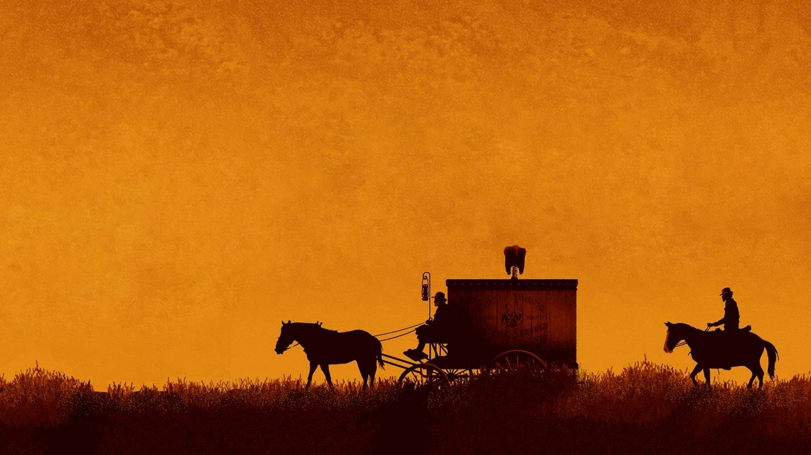
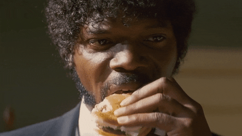
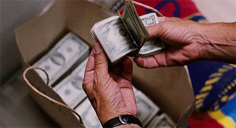

Úbor
Elasťáky a cvičky asi nechte doma, ale jinak přijďte v čemkoliv se budete cítit krásně a pohodlně. Ženich bude mít oblek, nevěsta šaty. V barvách se nijak neomezujte.

Hrádek 18, Trhové Sviny
Navigace Vás na místo dovede bez problémů, ale pokud můžeme doporučit trasu, tak hezčí a celkově příjemnější cesta, než přes D1 (je každá, to je jasný), je přes Rakousko (Znojmo-Horn-Schrems-Nové Hrady). Nevede přes rakouskou dálnici, takže dálniční známka netřeba. Samozřejmě ale záleží, jestli bude možný v červnu bezproblémový průjezd Rakouskem s ohledem na covid. Ve mlýně Vás uvítá místní koordinátor, ukáže Vám, kde budete bydlet, kde si přepudrovat nos apod. Prosíme, přijeďte v sobotu dle svého uvážení tak, abyste se stíhali připravit a být u obřadu, který bude přímo ve mlýně, ve 13.45 hod. Jen bychom chtěli poprosit, abyste se zkusili dopravit co nejmenším počtem aut.
Občerstvení bude zajištěno už při příjezdu, takže se nemusíte bát slabosti v kolenou z hladu a žízně při obřadu. Pořádná žranice bude následovat posléze – Big Kahuna to sice nebude, ale hlady neumřeme :)
Elasťáky a cvičky asi nechte doma, ale jinak přijďte v čemkoliv se budete cítit krásně a pohodlně. Ženich bude mít oblek, nevěsta šaty. V barvách se nijak neomezujte.
Pro všechny hosty je přespání zajištěno přímo v místě svatby bez nutnosti přemisťování se motorovými prostředky. V neděli je bohužel potřeba vyklidit pokoje nejpozději v 11.00 hod., protože mlynáři musí uklidit a nachystat pokoje pro hosty přijíždějící na týdenní ubytování. Pokud byste si ale chtěli např. udělat větší výlet či přímo dovolenou v okolí Novohradských hor (je tam krásně!), a z toho důvodu si chtěli zajistit ubytování po své ose, jen nám to dejte co nejdříve vědět.
Co se týče dětí, jen musíme upozornit, že mlýn není zrovna kids friendly, mimo svatby nejsou ve mlýně děti povoleny, takže nedisponují žádnými hrami pro děti, postýlkami apod. Pokud přijedete s dětmi a potřebovali byste dětskou postýlku, přivezte si prosím vlastní. Na místě je také rybník, takže malé děti je případně potřeba opravdu bedlivě hlídat.

Největším darem bude Vaše účast, protože moc dobře víme, že je to pořádný kus cesty. Pokud byste nás i přesto chtěli něčím dalším obdarovat, prosíme spíše o finanční příspěvek na večírek než porcelánového jelena.
